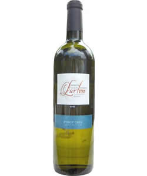

bodega lurton
Pinot gris
Argentina
mendoza
2011
Description
Solid notes of black currant blend with a light citrus make this wine an easy pour for varied palates

château de saint cosme
Grenache / Syrah
France
Southern Rhone / Gigondas
2009
Description
The aromas of fruit and spice give one a hint of the light drinkability of this lovely wine, which makes an excellent complement to fish dishes.

château le doyenne
Merlot
France
Bordeaux
2005
Description
Though dense and chewy, this wine does not overpower with its finely balanced depth and structure. It is a truly luxurious experience for the senses.

domaine du bouscat
Merlot
France
Bordeaux
2009
Description
The light golden color of this wine belies the bright flavor it holds. A true summer wine, it begs for a picnic lunch in a sun-soaked vineyard.